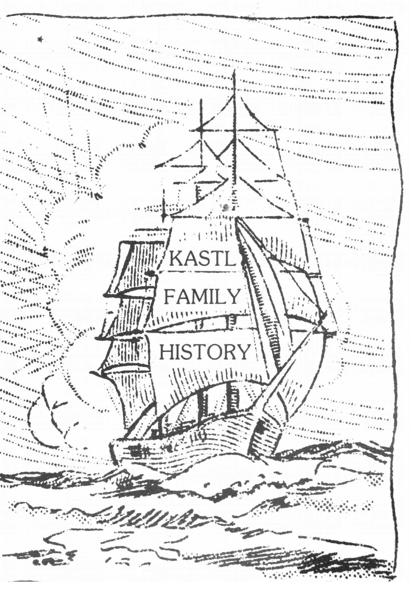

From Bohemia to Nebraska
The Kastl Family History
In the 1860s and early 1870s, seven Kastl brothers — sons of Thomas Kastl, a farmer near Všepadly in Bohemia — left for America. Six made their homes in Nebraska; Thomas settled in Illinois. This is their family’s history, compiled by Evelyn Coufal and Francis Vech and printed in 1985, with a supplement in 1986.

The seven brothers
Each brother has his own chapter in the book. A half-sister, Anna, stayed in Bohemia; her son James Zima came to Nebraska in 1922.
-
Brother
Peter Kastl 1827/1828–1903
- Born
- 1 November 1827, Bohemia (sources differ)
- Married
- Anna Frohner, January 1859, Bohemia
- Came to America
- 1866; the first of the brothers to come to America
- Died
- 31 October 1903
Family to be added — read it in the book for now
-
Brother
Wenzel Kastl b. 1831
- Born
- 26 February 1831, Všepadly, house No. 11, Bohemia
- Married
- Barbara Blachnik, in Bohemia
- Came to America
- Arrived at Baltimore 2 October 1867 on the Humbolt, from Bremen
Family to be added — read it in the book for now
-
Brother
John Kastl 1835–1890
- Born
- 29 November 1835, Všepadly, house No. 11, Bohemia
- Married
- Marie Kunes, in Bohemia
- Came to America
- Arrived at Baltimore 14 August 1872 on the S.S. Baltimore, from Bremen (sources differ)
- Died
- 20 December 1890
Family to be added — read it in the book for now
-
Brother
Josef Kastl 1840–1921
- Born
- 15 January 1840, Všepadly, house No. 11, Bohemia
- Married
- Dorota Blaha, 1863, Bohemia
- Came to America
- Sailed from Bremen on the S.S. Berlin with his wife and two children; arrived at Baltimore 22 April 1868
- Died
- 1921
21 descendants recorded so far
-
Brother
Jacob Kastl 1847–1935
- Born
- 5 May 1847, Všepadly, house No. 11, Bohemia (sources differ)
- Married
- Alzbeta Nemecek; marriage contract signed 31 January 1872, Lepadlech, Bohemia
- Came to America
- 1872, with his new bride
- Died
- 28 February 1935, at the home of his son Frank
Family to be added — read it in the book for now
-
Brother
Thomas Kastl 1850–1904
- Born
- 4 January 1850, Všepadly, house No. 11, Bohemia
- Married
- (1) Augusta Johns, 1873, Champaign, Illinois; (2) Emma Fowler of Meredosia, Illinois, 21 February 1886
- Came to America
- Arrived at Baltimore 29 May 1867 with his brother Andrew, on the Johannes–Wilhelmina, from Bremen
- Died
- 30 September 1904
Family to be added — read it in the book for now
-
Brother
Andrew Kastl 1853–1906
- Born
- 27 November 1853, Stara Hut, house No. 1, Bohemia
- Married
- Barbara Valecka
- Came to America
- Arrived at Baltimore 29 May 1867, aged 13, with his brother Thomas
- Died
- 5 May 1906
Family to be added — read it in the book for now
-
Half-sister
Anna Kastl b. 1865
- Born
- 12 March 1865, Stara Hut, house No. 3, Bohemia
- Married
- Joseph Zima, 1887, Bohemia
- Died
- In Bohemia
Family to be added — read it in the book for now
Before the brothers
Their ancestors, as far back as the records go.
- Andreas Kastl
- Wolfgang Jan Kastl b. 1742
- Jan Kastl b. 1777
- Thomas Kastl b. 1806